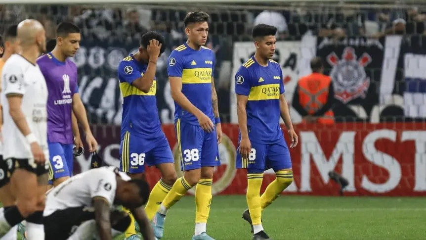
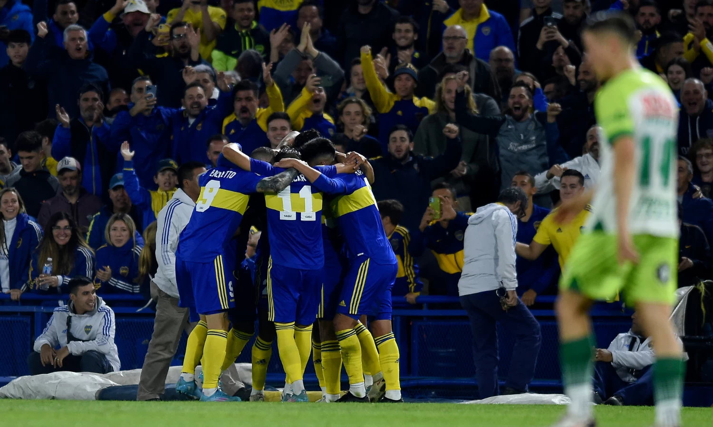

El Xeneize busca revertir la situación  El Xeneize perdió 2-0 frente al Corinthians en Brasil y quedó último en el grupo E. El equipo de Battaglia no levanta vuelo: jugó otro flojo partido.
Boca superó cómodamente a Defensa y enfrentará al Racing candidato en semis  El Xeneize perdió 2-0 frente al Corinthians en Brasil y quedó último en el grupo E. El equipo de Battaglia no levanta vuelo: jugó otro flojo partido.
El posible rival de Boca Este domingo se sabrá contra quién chocará el Xeneize: NOB, Defensa, Argentinos o Gimnasia. Acá, las posibilidades.